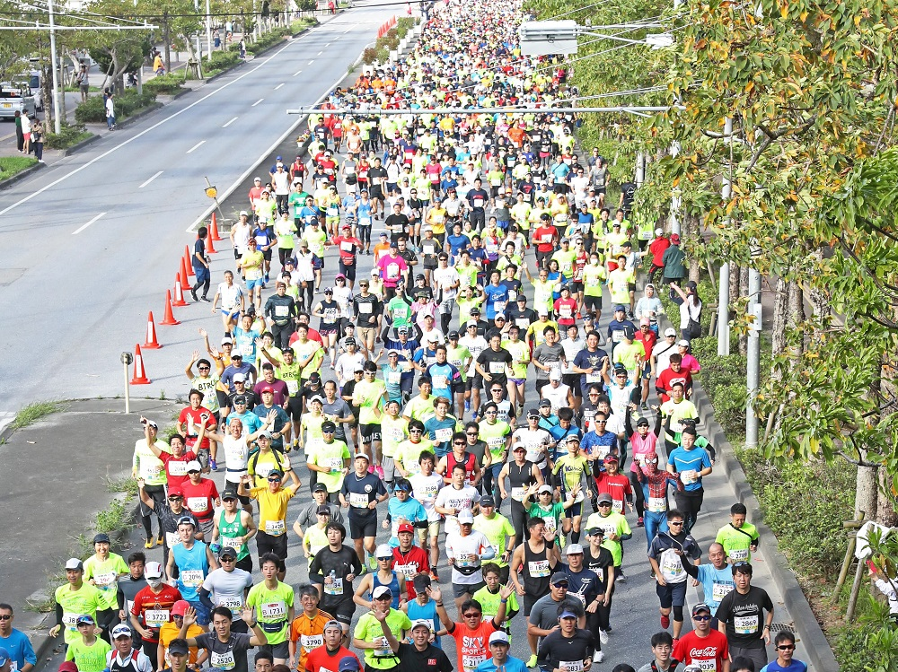
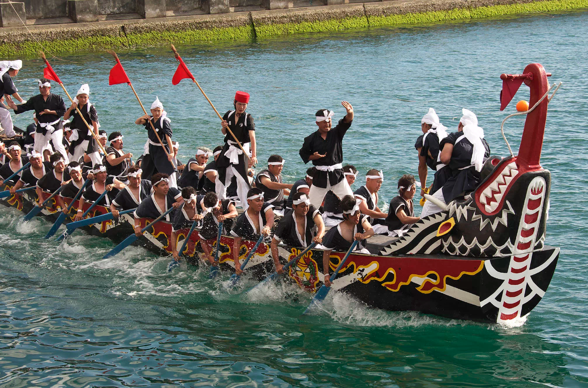
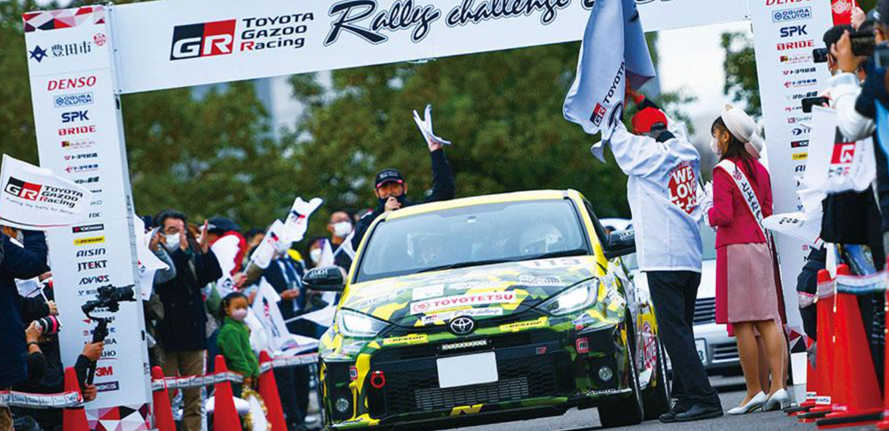
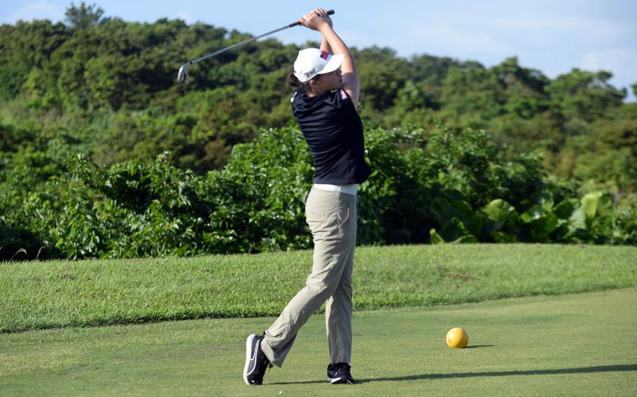
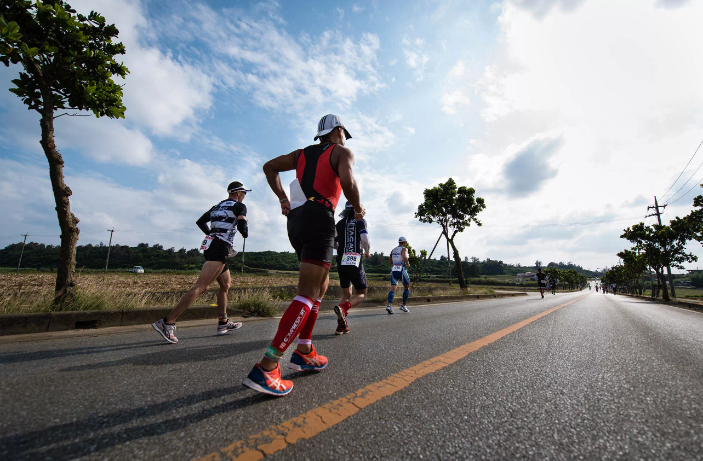
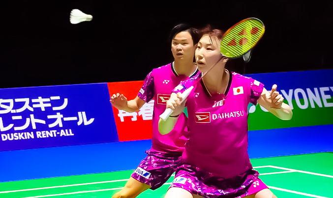
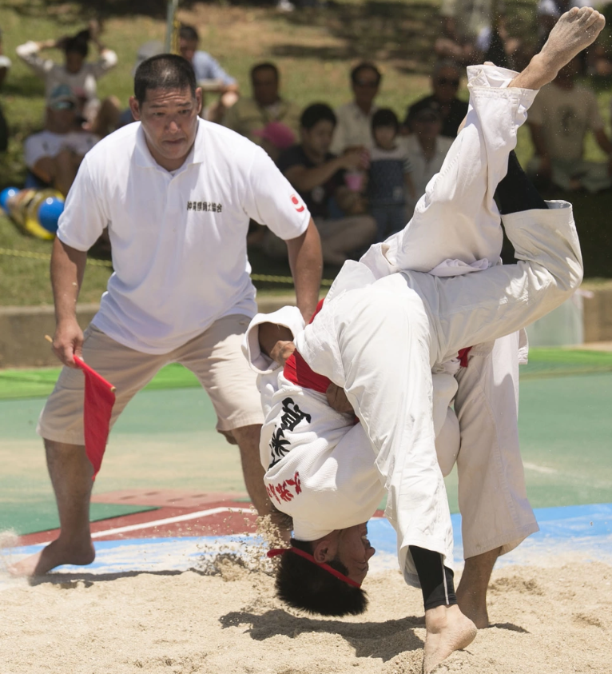

沖繩馬拉松
介紹：沖繩馬拉松是沖繩最著名的跑步賽事之一，吸引了來自世界各地的跑者。賽事包括全程馬拉松和半程馬拉松，路線穿越那霸市和周邊地區，參賽者可以沿途欣賞到沖繩的美麗景色和文化地標。
時間：每年2月
地點：那霸市及周邊地區

那霸哈里船比賽
介紹：這是一項傳統的龍舟比賽，起源於中國的端午節。比賽通常在那霸港舉行，吸引了來自全島的團隊參賽。比賽氛圍熱鬧，觀眾可以在岸邊為參賽隊伍加油助威，體驗沖繩的海洋文化。
時間：每年5月
地點：那霸港

Tour de Okinawa
介紹：這是一年一度的自行車賽事，吸引了國內外的自行車愛好者參加。賽事包括不同距離的路線，從短距離的家庭騎行到挑戰性的長距離賽道。騎行路線經過沖繩的沿海公路和山區，風景優美。
時間：每年11月
地點：沖繩本島及周邊地區

沖繩國際拉力賽
介紹：這是沖繩最重要的汽車拉力賽事之一，吸引了來自日本各地和海外的車隊參賽。賽事在崎嶇的山路和海岸公路上進行，對參賽者的駕駛技術和車輛性能都是極大的考驗。
時間：每年12月
地點：沖繩本島

沖繩高爾夫錦標賽
介紹：沖繩高爾夫錦標賽是一項國際知名的高爾夫賽事，吸引了來自世界各地的高爾夫選手參加。。這些賽事通常在多個頂級球場輪流舉行，是高爾夫愛好者的一大盛事。
時間：每年秋季
地點：沖繩各大高爾夫球場

沖繩三項鐵人賽
介紹：沖繩三項鐵人賽是一項挑戰體能極限的賽事，包括游泳、自行車和跑步三個項目。賽道設置在風景如畫的沿海地區，參賽者可以在比賽中享受沖繩的自然美景。
時間：每年春季
地點：沖繩本島

沖繩國際羽毛球公開賽
介紹：這是國際羽毛球聯合會認可的賽事，吸引了來自世界各地的頂尖羽毛球選手。賽事在那霸市內的體育館舉行，觀眾可以觀賞到高水平的羽毛球比賽。
時間：每年夏季
地點：那霸市

沖繩傳統摔角比賽
介紹：這是一項具有歷史和文化意義的運動，比賽規則類似於日本相撲，但具有沖繩地方特色。比賽在傳統的土俵上進行，參賽者穿著特製的摔角服裝，吸引了許多觀眾前來觀賞。
時間：不定期
地點：沖繩各地的傳統表演場地

沖繩棒球賽
介紹：棒球在沖繩非常受歡迎，許多高中和大學的棒球隊定期舉辦比賽。沖繩還有專業的棒球聯賽，賽季期間在各大球場舉行精彩的比賽。
時間：賽季期間
地點：沖繩各地的棒球場